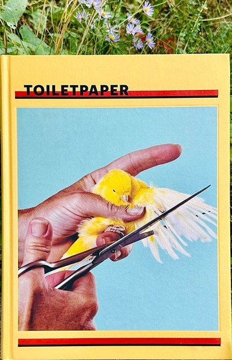
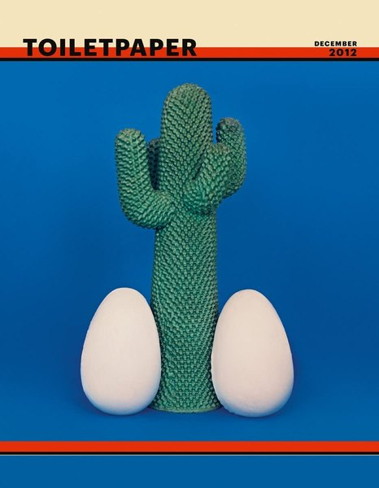
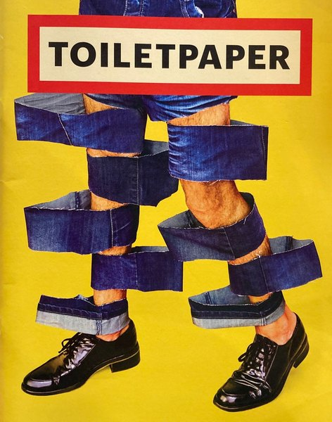
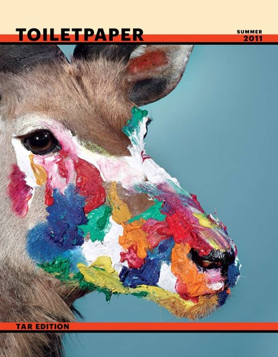
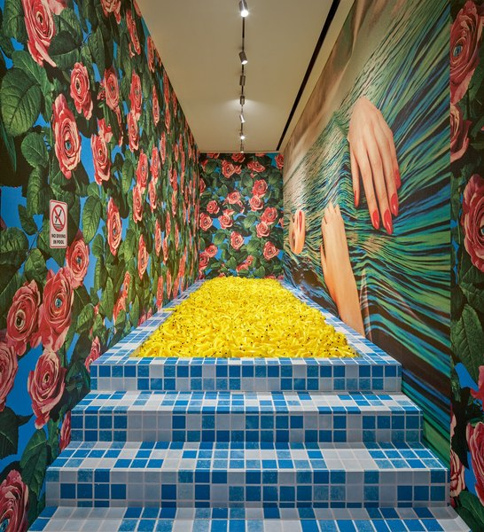
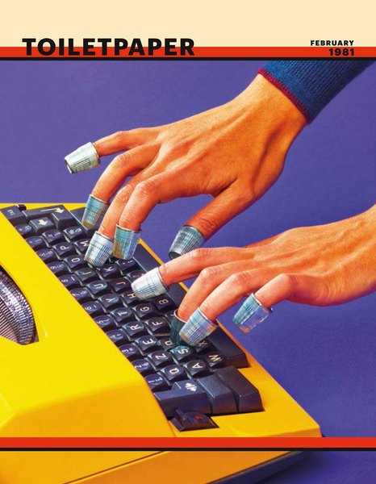

CRVI000639Maurizio Cattelan, Pierpaolo Ferrari - VICE, March
VICE, March 2016 · 2016
VICE, March 2016 · 2016

CRVI000678Gail Bichler, Kathy Ryan, Maurizio Cattelan, Pierpaolo Ferrari - The Tech & Design Issue
The New York Times Magazine, November 17, 2019 · 2019
The New York Times Magazine, November 17, 2019 · 2019

CRVI002830Maurizio Cattelan and Pierpaolo Ferrari - Toilet Paper, Issue 8
2013
2013

CRVI002831Maurizio Cattelan and Pierpaolo Ferrari - Toilet Paper (canary and scissors cover)

CRVI002832Maurizio Cattelan and Pierpaolo Ferrari - Toilet Paper, February 2012
2012
2012

CRVI002833Maurizio Cattelan and Pierpaolo Ferrari - Toilet Paper, December 2012
2012
2012

CRVI002834Maurizio Cattelan and Pierpaolo Ferrari - Toilet Paper (denim and shoes cover)

CRVI002835Maurizio Cattelan and Pierpaolo Ferrari - Toilet Paper, Issue 1
2010
2010

CRVI002836Maurizio Cattelan and Pierpaolo Ferrari - Toilet Paper, Summer 2011 (TAR edition)
2011
2011

CRVI002837Maurizio Cattelan and Pierpaolo Ferrari - Toilet Paper, June 2011
2011
2011

CRVI002838Maurizio Cattelan and Pierpaolo Ferrari - Untitled (roses interior)

CRVI002839Maurizio Cattelan and Pierpaolo Ferrari - Toilet Paper, Issue 9
2014
2014

CRVI002840Maurizio Cattelan and Pierpaolo Ferrari - Toilet Paper, Diamond Collection